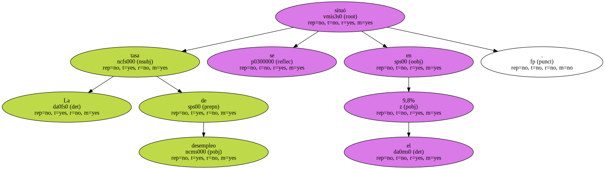
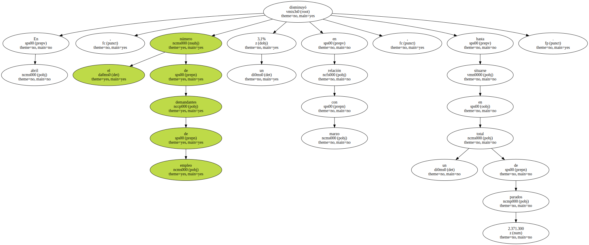
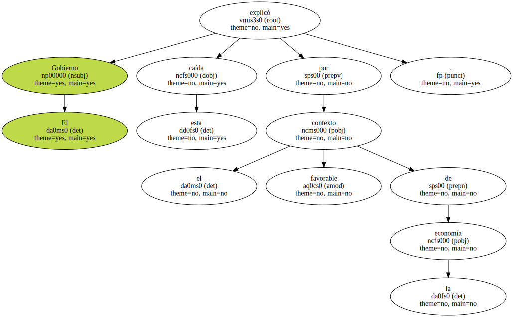

El paro en Francia cayó en abril por debajo del 10% por primera vez en 10 años.

La tasa de desempleo se situó en el 9,8%.
En abril , el número de demandantes de empleo disminuyó un 3,1% en relación con marzo , hasta situarse en un total de 2.371.300 parados.
El Gobierno explicó esta caída por el favorable contexto de la economía.
